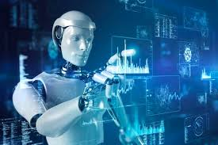
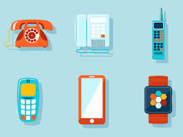
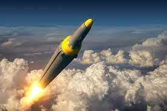
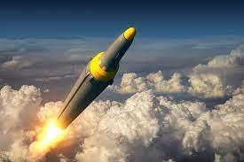
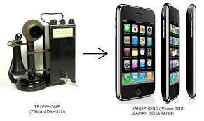
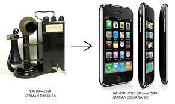

Kemajuan teknologi adalah perkembangan dan inovasi dalam bidang ilmu pengetahuan dan teknologi yang berdampak pada masyarakat dan ekonomi. Teknologi terus berkembang dengan cepat, dan beberapa tren utama dalam kemajuan teknologi yang mungkin terjadi sejak pengetahuan saya terakhir adalah:

Kecerdasan Buatan (Artificial Intelligence - AI): AI terus menjadi tren utama dalam teknologi. Pengembangan mesin cerdas yang dapat belajar dan beradaptasi sendiri telah menghasilkan aplikasi seperti kendaraan otonom, pengenalan suara dan wajah, serta algoritma pemrosesan bahasa alami yang semakin canggih.
Internet of Things (IoT): IoT menghubungkan perangkat dan objek fisik ke internet, memungkinkan pertukaran data yang lebih cerdas dan pengendalian jarak jauh. Ini telah diterapkan dalam berbagai konteks, seperti rumah pintar, kota cerdas, dan industri.
Komputasi Kuantum: Kemajuan dalam komputasi kuantum telah membawa harapan untuk mengatasi masalah yang sulit dipecahkan dengan komputer konvensional. Namun, ini masih dalam tahap pengembangan. Biologi Sintetis dan Genomik: Penelitian dalam biologi sintetis dan genomik telah menghasilkan inovasi dalam bidang kesehatan, pertanian, dan lingkungan. Ini termasuk terapi gen, pengembangan organisme yang dimodifikasi secara genetik, dan perangkat diagnostik yang canggih.
Konnektivitas 5G: Jaringan seluler 5G memberikan koneksi internet yang lebih cepat dan stabil, membuka peluang baru dalam komunikasi, industri, dan hiburan. Realitas Virtual dan Augmented
Reality (VR/AR): Teknologi ini semakin mendalam dan mengekspansi aplikasi dalam berbagai industri, termasuk gaming, pendidikan, dan pelatihan. Pengembangan Teknologi Ramah Lingkungan: Teknologi yang lebih ramah lingkungan, seperti energi terbarukan, mobil listrik, dan
solusi pengelolaan limbah, semakin ditekankan untuk mengatasi perubahan iklim. Blockchain dan Cryptocurrency: Teknologi blockchain memiliki potensi untuk mengubah cara kita melakukan transaksi dan mengelola data. Cryptocurrency seperti Bitcoin menjadi semakin diterima secara luas sebagai bentuk pembayaran.
Pertumbuhan E-commerce: E-commerce terus berkembang pesat, terutama selama pandemi COVID-19. Ini telah mengubah cara orang berbelanja dan menjual produk. Kecerdasan Kolektif: Teknologi memungkinkan kolaborasi global yang lebih mudah dan pertukaran informasi yang cepat. Hal ini mendorong inovasi dan solusi bersama untuk tantangan global. Tentu saja, kemajuan teknologi dapat berbeda dari satu wilayah atau negara ke yang lain, dan perkembangan lebih lanjut dapat terjadi setelah pengetahuan saya terakhir. Kemajuan teknologi dapat memberikan manfaat besar, tetapi juga menimbulkan sejumlah tantangan, termasuk masalah privasi, keamanan, dan etika yang harus diatasi secara serius saat teknologi terus berkembang.

Tak dapat dipungkiri jika kemajuan teknologi masa kini berkembang sangat pesat. Hal ini dapat dibuktikan dengan banyaknya inovasi yang telah dibuat di dunia ini. Dari teknologi kuno, sederhana, hingga yang menghebohkan dunia.
Sebenarnya Teknologi sudah ada sejak zaman dahulu, yaitu zaman romawi kuno. Perkembangan teknologi berkembang secara drastis, dan terus berevolusi hingga sekarang. Hingga menciptakan objek-objek, teknik yang dapat membantu manusia dalam pengerjaan sesuatu lebih efisien, dan cepat. Dalam bentuk yang paling sederhana, kemajuan teknologi dihasilkan dari pengembangan cara-cara lama atau penemuan metode baru dalam menyelesaikan tugas-tugas tradisional seperti bercocok tanam, membuat baju, atau membangun rumah.
Ada tiga klasifikasi dasar dari kemajuan teknologi yaitu:
1. Kemajuan teknologi yang bersifat netral (bahasa Inggris: neutral technological progress) Terjadi bila tingkat pengeluaran (output) lebih tinggi dicapai dengan kuantitas dan kombinasi faktor-faktor pemasukan (input) yang sama.
2. Kemajuan teknologi yang hemat tenaga kerja (bahasa Inggris: labor-saving technological progress) Kemajuan teknologi yang terjadi sejak akhir abad kesembilan belas banyak ditandai oleh meningkatnya secara cepat teknologi yang hemat tenaga kerja dalam memproduksi sesuatu mulai dari kacang-kacangan sampai sepeda hingga jembatan.
3. Kemajuan teknologi yang hemat modal (bahasa Inggris: capital-saving technological progress) Fenomena yang relatif langka. Hal ini terutama disebabkan karena hampir semua riset teknologi, dan ilmu pengetahuan di dunia dilakukan di negara-negara maju, yang lebih ditujukan untuk menghemat tenaga kerja, bukan modalnya.
Pengalaman di berbagai negara berkembang menunjukan bahwa adanya campur tangan langsung secara berlebihan, terutama berupa peraturan pemerintah yang terlampau ketat, dalam pasar teknologi asing justru menghambat arus teknologi asing ke negara-negara berkembang.[20] Kemajuan teknologi memang sangat penting untuk kehidupan manusia zaman sekarang. Karena teknologi adalah salah satu penunjang kemajuan manusia.
Di banyak belahan masyarakat, teknologi telah membantu memperbaiki ekonomi, pangan, komputer, dan masih banyak lagi. Di lain pihak suatu kebijaksanaan 'pintu yang lama sekali terbuka' terhadap arus teknologi asing, terutama dalam bentuk penanaman modal asing (PMA), justru menghambat kemandirian yang lebih besar dalam proses pengembangan kemampuan teknologi negara berkembang karena ketergantungan yang terlampau besar pada pihak investor asing,
karena merekalah yang melakukan segala upaya teknologi yang sulit, dan rumit.[20] Ini menjadi bukti bahwa memang teknologi sudah menjadi kebutuhan, dan merata di setiap sektor kehidupan manusia. Terlebih setelah adanya penemuan komputer, dan laptop, yang sekarang hampir semua pekerjaan manusia memiliki hubungan dengan komputer ataupun laptop. Sehingga pantas jika komputer adalah penemuan yang paling mutakhir, dan yang paling berpengaruh pada kehidupan manusia.
Dampak
Dampak teknologi sangat luas dan bervariasi tergantung pada konteksnya. Berikut adalah beberapa dampak teknologi yang umum terjadi:
1. Kemajuan Ekonomi: Teknologi telah menjadi motor utama pertumbuhan ekonomi di banyak negara. Inovasi teknologi mendorong produktivitas, menghasilkan peluang bisnis baru, dan menciptakan lapangan kerja.
2. Komunikasi dan Interaksi Sosial: Teknologi komunikasi memfasilitasi komunikasi jarak jauh, memungkinkan kita berinteraksi dengan orang di seluruh dunia dalam waktu nyata.
3. Pendidikan: Teknologi telah mengubah pendidikan dengan pembelajaran online, sumber daya pendidikan digital, dan platform pembelajaran yang canggih.
4. Kesehatan: Teknologi medis seperti pencitraan medis canggih, robot bedah, dan rekayasa genetika telah meningkatkan perawatan kesehatan, diagnosis, dan terapi.
5. Transportasi: Teknologi telah menghasilkan transportasi yang lebih efisien, seperti mobil otonom dan transportasi berbagi, yang berpotensi mengurangi kemacetan lalu lintas dan polusi.
6. Lingkungan: Teknologi juga dapat digunakan untuk solusi lingkungan seperti energi terbarukan dan pemantauan lingkungan yang lebih baik.
7. Keamanan dan Keamanan Informasi: Teknologi memiliki peran besar dalam keamanan nasional dan keamanan siber.
8. Hiburan: Teknologi telah menghadirkan hiburan digital seperti game, streaming video, dan musik secara online.
9. Mobilitas dan Kemudahan Akses: Aplikasi perangkat seluler dan layanan berbasis internet telah membuat hidup lebih mudah dan mobilitas lebih tinggi.
10. Dampak Sosial: Teknologi dapat memengaruhi budaya, norma sosial, dan struktur sosial dalam masyarakat.
Namun, penting untuk diingat bahwa teknologi juga memiliki dampak negatif, termasuk masalah privasi, keamanan siber, perubahan dalam jenis pekerjaan, e-waste (limbah elektronik), dan masalah etika seputar penggunaan teknologi. Oleh karena itu, penting untuk mengelola dan mengatur teknologi dengan bijak untuk memaksimalkan manfaatnya sambil meminimalkan dampak negatifnya.
Dampak baik

Efisiensi dan Produktivitas: Teknologi telah meningkatkan efisiensi dalam berbagai sektor ekonomi. Automatisasi dan otomatisasi proses bisnis telah meningkatkan produktivitas, mengurangi biaya, dan memungkinkan perusahaan untuk berkembang lebih cepat
Kemudahan Komunikasi: Teknologi komunikasi seperti internet, email, dan media sosial telah menghubungkan orang di seluruh dunia dengan lebih mudah. Ini memfasilitasi komunikasi global, kolaborasi, dan pertukaran informasi.
Kemajuan Kesehatan: Teknologi telah menghasilkan kemajuan besar dalam bidang kesehatan, termasuk perkembangan peralatan medis canggih, terapi gen, dan pemantauan kesehatan yang lebih baik.
Pendidikan yang Lebih Baik: Teknologi telah memungkinkan pendidikan jarak jauh, akses ke sumber daya pendidikan online, dan pembelajaran yang disesuaikan dengan kebutuhan individu.
Inovasi dalam Bisnis: Start-up dan perusahaan teknologi telah mendorong inovasi dalam berbagai industri, menciptakan lapangan kerja baru dan memperkenalkan produk dan layanan yang mengubah hidup.
Kemajuan Ilmu Pengetahuan: Teknologi memungkinkan penelitian ilmiah yang lebih cepat dan canggih, mempercepat kemajuan dalam berbagai bidang ilmu pengetahuan seperti astronomi, fisika, dan biologi.
Dampak buruk
Kehilangan Pekerjaan: Automatisasi dan robotisasi dapat menggantikan pekerja manusia dalam beberapa pekerjaan, menyebabkan kekhawatiran tentang pengangguran struktural.
Keamanan dan Privasi: Perkembangan teknologi telah memunculkan masalah privasi dan keamanan yang serius, seperti pelanggaran data, peretasan, dan penyalahgunaan informasi pribadi.
Ketidaksetaraan Akses: Meskipun teknologi telah meningkatkan akses ke informasi dan layanan, masih ada ketidaksetaraan akses yang signifikan di seluruh dunia, yang dapat memperdalam kesenjangan sosial.
Isolasi Sosial: Penggunaan yang berlebihan dari teknologi komunikasi dapat menyebabkan isolasi sosial dan gangguan kesehatan mental seperti kecanduan media sosial.
Pengaruh Media Sosial Negatif: Media sosial dapat digunakan untuk menyebarkan disinformasi, memicu konflik, dan mengintensifkan masalah sosial seperti pelecehan online dan perundungan cyber.
Dampak Lingkungan: Pembuatan, penggunaan, dan pembuangan teknologi elektronik memiliki dampak lingkungan yang signifikan, termasuk masalah limbah elektronik dan konsumsi energi yang tinggi.
Penting untuk diingat bahwa teknologi itu sendiri bukanlah baik atau buruk, tetapi bagaimana teknologi digunakan dan diatur dapat menentukan dampaknya. Oleh karena itu, pengembangan teknologi yang bertanggung jawab dan pemahaman tentang konsekuensi etis dari teknologi adalah kunci untuk memaksimalkan dampak positif dan meminimalkan dampak negatifnya.
 



 
